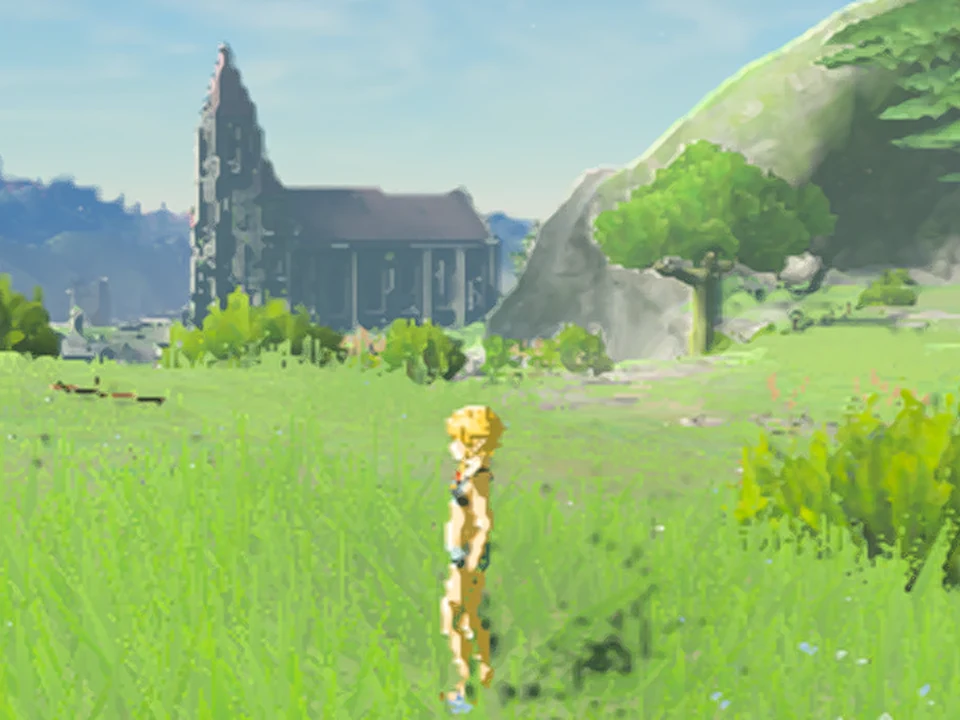

(opens the full-size picture)Your mods
Switch and Wii U mods, together
Keep the mods you already love. Breathalyzer works out what each one is and makes them play nicely.
- Switch mods: game files, code patches and cheats
- .bnp packages with log merging: texts, maps, game and save data, actor info. Shops and drops: New
- UKMM packages, in part New
- Wii U mods converted on your PC: data. Models and textures: New (not seen in the game yet)